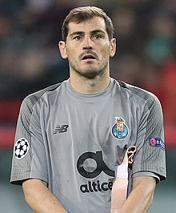

I.Casillas

Nombre completo
Iker Casillas Fernández
Nacimiento y Edad
20 de Mayo de 1981, 42 años
Altura
1,82m
Posición
Portero
Seleción Nacional
España
Trayectoria
Real Madrid (1999-15)
F.C Porto (2015-2020)